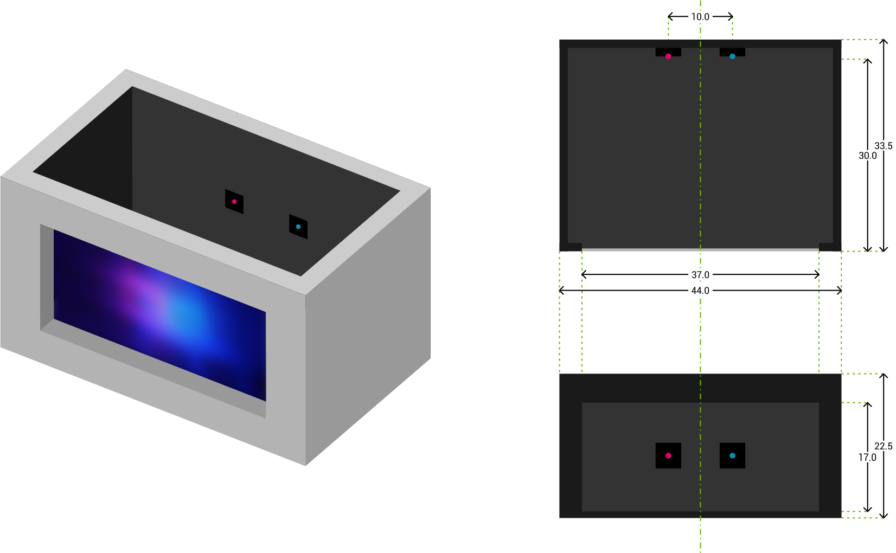

1–1 Desain Sistem
Sistem dirancang berbentuk balok dengan dimensi bagian dalam \(44\) \(\textrm{x}\) \(33,5\) \(\textrm{x}\) \(22,5\) \(\textrm{cm}\). Pada dinding bagian depan terdapat lubang berbentuk persegi panjang dengan ukuran \(37\) \(\textrm{x}\) \(17\) \(\textrm{cm}\) sebagai tempat meletakkan layar. Layar yang digunakan berupa kertas kalkir. Hal tersebut dipilih karena kertas kalkir memiliki daya tembus cahaya yang lebih baik dibandingkan dengan kertas HVS biasa, tetapi tidak dengan mudah meloloskan semua cahaya yang diterima sehingga masih dapat terbentuk citra bayangan dari objek yang disinari ke arahnya. Karena kertas kalkir merupakan kertas yang cukup peka dengan tingkat kelembaban di sekitarnya, saya memilih kertas kalkir dengan gramatur \(80\) \(\textrm{g}\). Ukuran kertas kalkir disesuaikan sedemikian sehingga dapat menutup lubang pada dinding bagian depan. Sumber cahaya berupa LED diletakkan sejauh \(30\) \(\textrm{cm}\) dari layar. LED tersebut diletakkan bersebelahan dengan jarak masing-masing \(5\) \(\textrm{cm}\) dari titik tengah dinding belakang. Di depan masing-masing LED diberi mika berwarna merah dan biru. Terdapat 1 lapis mika berwarna merah di depan LED pertama dan 2 lapis mika berwarna biru di depan LED kedua. Dinding bagian dalam dilapisi busa hitam untuk menghindari adanya sumber cahaya lain yang dihasilkan dari pantulan cahaya pada dinding.
1–2 Metode Pengambilan Data
Pengambilan data dilakukan dengan bantuan USAF 1951 Resolution Test Chart [1] sebagai objek. Objek diletakkan paralel terhadap layar. Lalu dilakukan variasi jarak objek dengan layar, dimulai dari jarak 5 cm sampai 30 cm, dengan penambahan jarak 5 cm. Citra yang muncul direkam menggunakan kamera digital. Video tersebut kemudian diolah dengan perangkat lunak FFmpeg untuk mendapatkan masing-masing satu buah file citra untuk masing-masing jarak. File citra tersebut kemudian diolah menggunakan ImageJ. Di dalam ImageJ, sebuah file citra dipisahkan menjadi 3 kanal berbeda: merah, hijau, dan biru, melalui menu Image > Color > Split Channels. Karena sistem yang saya rancang menggunakan mika berwarna merah dan biru saja, maka saya hanya mengolah citra pada kanal merah dan biru saja. Kemudian saya secara visual mensortir file yang ada untuk mencari file mana yang dapat menampilkan elemen dan grup terkecil pada USAF 1951 Resolution Test Chart dengan jelas. Didapatkan hipotesis bahwa file citra pada jarak 5 cm dapat me-resolve komponen elemen 4 dari grup 0. Untuk memperkuat hipotesis tersebut, saya perlu melakukan analisis visibilitas pada seluruh elemen pada grup tersebut. Kemudian saya melakukan line plotting dengan menggambar sebuah garis melintang pada masing-masing elemen pada grup 0, dilanjutkan dengan melihat kurva intensitas sepanjang garis tersebut melalui menu Analyze > Plot Profile. Saya melakukan 3 kali line plotting untuk masing-masing elemen, baik vertikal maupun horizontal, untuk meminimalisir kesalahan dalam data yang saya olah.
Dari data yang saya olah dengan split channels dan line plotting pada ImageJ, didapatkan kurva intensitas warna abu abu (0 untuk hitam dan 255 untuk putih) terhadap posisi (dalam pixel). Kurva tersebut dapat disimpan dengan menu More >> Copy All Data dan mem-paste data tersebut dalam perangkat lunak Microsoft Excel. Data-data intensitas tadi akan muncul dalam bentuk tabel yang berisi sederetan pasangan nilai pixel (kolom x) dan intensitas untuk (kolom y). Dengan menggunakan menu Analyze > Set Scale pada elemen yang saya tahu persis ukurannya (elemen 1 grup -2 memiliki ukuran 10 mm), saya dapat mengetahui berapa panjang 1 pixel jika dibandingkan dengan ukuran sebenarnya. Setelah saya gunakan menu tersebut, didapat citra yang saya olah memiliki skala 4,125 pixels/mm yang artinya 1 pixel dalam citra saya sama dengan 0,242 mm.
Matahari terdiri dari dua elemen penyusun utama: hidrogen dan helium. Hidrogen memiliki ukuran yang lebih kecil dari helium. Atom hidrogen hanya terdiri dari satu proton dan satu elektron, menjadikannya elemen paling kecil dalam tabel periodik. Dalam kondisi normal, dua atom hidrogen yang saling berdekatan akan saling tolak menolak. Hal ini disebabkan oleh interaksi dari elektron yang ada di masing-masing atom. Walaupun dari kejauhan matahari tampak tidak bergerak, atom hidrogen dalam matahari terus bergerak. Matahari memiliki ukuran yang besar. Ketika sekumpulan atom berkumpul dan membentuk ukuran yang besar, gaya gravitasi yang dihasilkan akan semakin besar. Semua atom hidrogen akan berlomba-lomba untuk mencapai pusat matahari. Dalam mencapai tujuan tersebut, berbagai atom hidrogen akan saling berdesakan sedemikian sehingga inti atom dari dua buah atom hidrogen dapat menyatu, membentuk elemen baru yang disebut helium. Penyatuan ini disebut sebagai fusi. Selain membentuk elemen baru, fusi juga menghasilkan energi berupa gelombang elektromagnetik. Energi inilah yang kemudian kita terima di Bumi sebagai cahaya dan panas dari matahari. Di samping fusi, terdapat fenomena yang disebut sebagai fisi. Fisi juga menghasilkan energi. Namun, berbeda dengan fusi, fisi disebabkan oleh terpecahnya sebuah elemen yang lebih besar menjadi beberapa elemen yang lebih kecil. Bayangkan fenomena ini sebagai balon yang terbuat dari karet yang sangat tipis, sedemikian sehingga gesekan tangan kita pada permukaan balon tersebut cukup untuk membuatnya meletus. Veritasium memiliki pendekatan yang menarik mengenai bagaimana matahari mendapatkan energinya.2
1–3 What You See is (not) What You Get
Bayangkan ketika kita berdesakan memasuki suatu pasar yang sangat ramai, kita akan merasakan bagaimana kita terdorong ke berbagai arah. Gerakan kita akan sangat acak. Gerakan acak ini juga terjadi pada atom. Ketika atom bergerak acak, gerakan acak tersebut akan mempengaruhi atom di sekitarnya. Fenomena ini yang kita kenali sebagai kalor. Semakin acak dan hebat gerakan suatu atom, semakin tinggi kalor yang dihasilkan. Selama suhu suatu objek tidak mencapai \(0\,\textrm{K}\), atom penyusun objek tersebut tidak akan pernah berhenti bergerak acak. Bayangkan, seluruh objek di sekitar kita yang tampak diam, sebenarnya menyimpan atom yang terus bergerak. Tidak ada yang tetap diam di tempat.
1–4 Dari Mana Pohon Mendapatkan Massanya?
Pertanyaan tersebut tampak sederhana. Namun, terkadang pertanyaan yang sederhana menyimpan jawaban yang luar biasa.3 Kita tidak bisa menciptakan massa begitu saja. Selalu ada sesuatu yang dipindahkan maupun diubah. Apakah sebagian besar massa pohon berasal dari zat hara yang ada di dalam tanah? Jika iya, maka akan ada cekungan besar yang berada di sekitar pohon karena ada massa tanah yang hilang dan berpindah ke dalam pohon. Pertanyaan ini juga pernah muncul berabad-abad lalu. Kemudian seorang kimiawan dari Belgia, Jan Baptist van Helmont, berinisiatif untuk melakukan penelitian mengenai hal ini dengan mengamati pertumbuhan pohon willow selama lima tahun. Singkat cerita, penelitian tersebut mengemukakan bahwa sebagian besar massa yang diperoleh sebuah pohon tidak berasal dari tanah. Hal ini dibuktikan dengan massa tanah yang tidak berubah banyak setelah lima tahun. Di sisi lain, pohon yang ditanam oleh Helmont justru mengalami peningkatan massa yang sangat signifikan.
Pohon tersusun dari tiga elemen utama: karbon, hidrogen, dan oksigen. Faktanya, dari ketiga elemen tersebut, karbon merupakan elemen yang paling banyak dijumpai dalam pohon. Dari manakah karbon berasal? Terdapat fenomena yang cukup familiar jika kita berbicara tentang pohon, yaitu fotosintesis. Fotosintesis membutuhkan karbondioksida, air, dan sinar matahari untuk dapat menghasilkan oksigen dan karbohidrat. Jika kita amati hal yang dibutuhkan dalam fotosintesis, maka akan kita jumpai bahwa karbon hanya dijumpai pada karbondioksida. Ya, udara di sekitar kita, yang kita anggap sebagai sesuatu yang sudah tidak terpakai lagi. Pohon justru menganggap oksigen sebagai “limbah” yang mereka tidak butuhkan. Padahal oksigen justru merupakan salah satu komponen utama yang membuat kita tetap hidup.
1–5 Aku dan Kau Sama
Tubuh kita juga mengandung karbon. Salah satu sumber karbon tersebut adalah makanan yang kita dapatkan dari berbagai sumber seperti hewan maupun tumbuhan. Jika kita memakan sayuran, maka sebagian elemen penyusun sayuran akan kita serap dan sisanya akan kita buang. Salah satu elemen yang kita serap memuat karbon. Padahal karbon tersebut oleh tumbuhan didapatkan dari udara di sekitar kita. Jadi kita bisa katakan bahwa kita mengonsumsi udara! Lalu bagaimana jika kita mengonsumsi daging hewan? Pada dasarnya, sebagian besar hewan yang kita konsumsi memakan tumbuhan. Jika memang hewan tersebut karnivora dan mangsanya juga karnivora, maka kita bisa menelusuri hingga ujung rantai dan tahu bahwa di ujung sana akan ada herbivora yang menjadi awal segalanya.
Karbon tersebut telah mengalami perjalanan panjang, berpindah dari satu tempat ke tempat lain. Dari udara, tumbuhan, hewan, untuk kemudian kita makan. Bahkan ketika kita bernafas, kita mengeluarkan karbon. Karbon tersebut kemudian akan diserap oleh tumbuhan, dan siklus ini berputar terus. Karbon yang semula milik udara, berpindah menjadi milik tumbuhan, dan berpindah menjadi milik hewan. Hingga pada akhirnya sempat menjadi milik kita. Namun, apakah kita benar-benar memiliki karbon tersebut. Apakah karbon ini pernah singgah di manusia lain? Lalu bagaimana dengan elemen lain dalam tubuh kita? Apakah kita benar-benar memiliki segalanya?